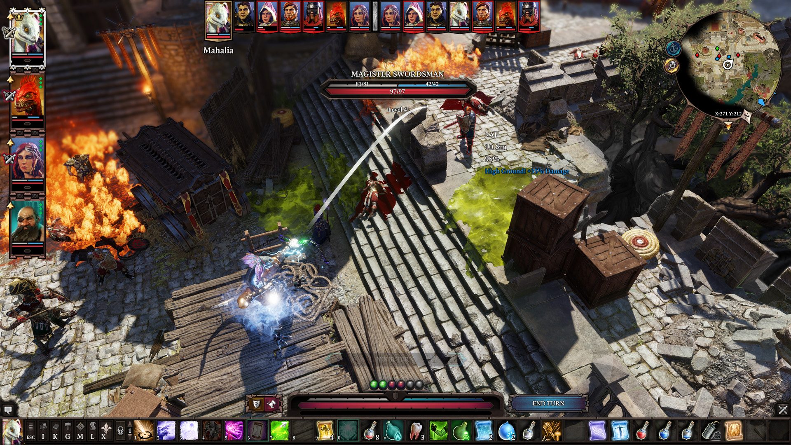
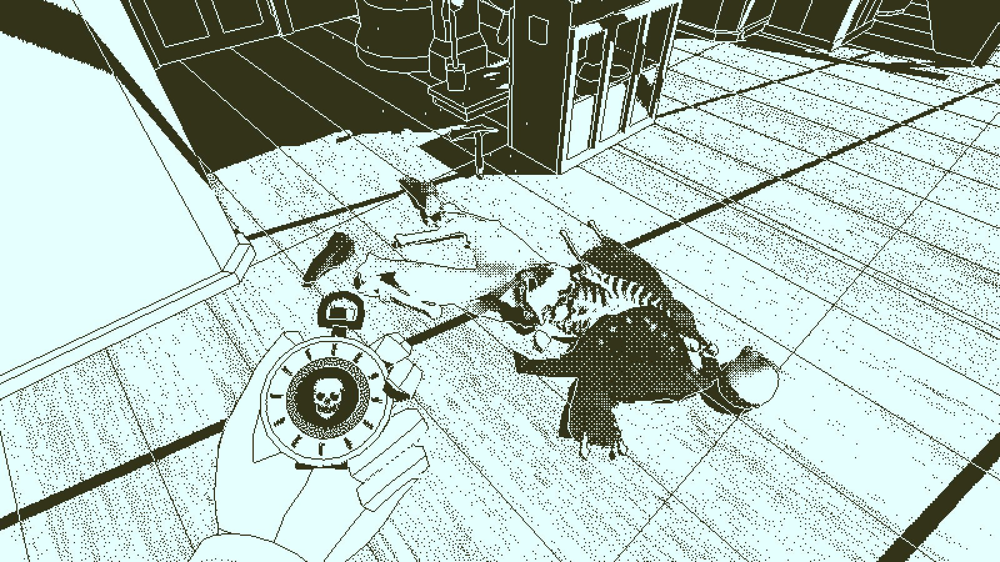
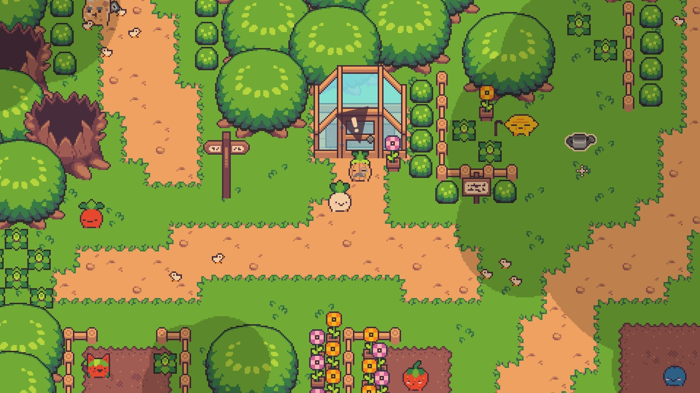

April 26, 2025
Mara Solen
I've been playing video games on a bunch of different consoles since I was a kid, including Playstation 2/3, Gamecube, Wii, Switch, Gameboy, and DS. I also play games on my computer, mostly through the Steam platform. When I was younger, my parents would rarely buy me the games that my friends were playing, so I would have to find free games or pirate paid ones. Since I started getting my own jobs and having my own money, I've been able to actually buy games and game bundles, and now I have almost 600 games owned on Steam!
I decided to look back through the games I've played on Steam, with the criterium that I have to have played it for at least two hours, resulting in 56 games. I've made a visualization of these games below, where each game is represented by a disc, ordered by the number of hours I've played the game. The colour of the inner ring shows how much I liked it (green meaning I liked it, purple meaning I did not like it). The little dots on that inner ring represent the number of hours I played the game, with each dot representing 10 hours. The size of the middle ring represents how many achievements I got in the game, with it filling up the disc more the more achievements I got. Finally, the ring-like "scratches" in the disk represent the time between owning the game and the last time I played it. I've also written a one sentence review of each game which is below each disc.
Looking back on these games reminded me how amazing some of them are. Here are three that many people probably haven't heard about but that I would highly recommend!
Divinity: Original Sin II
I would call this my favourite game of all time. The gameplay, story, visuals, and everything else is all amazing. It helps that I also played this game many times through with different groups of friends, so I have a lot of good memories of funny or cool moments from that. It is rare that I play a story-based game multiple times, and even rarer that I care to try to beat a game on hard difficulties, but I did both with this game.

Return of the Obra Dinn
In this game, you are an inspector for an insurance company. One of the ships your company insured floats into the harbour, and the entire crew is dead or missing. Your job is to determine the fate of every single crew member. You have a special watch that lets you go back in time to the moment of a crew member's death - if you can find their body. You also have a list of crew members with their names and roles, as well as a couple pictures of the crew together. Every time you guess three crew members correctly, the game confirms them for you, and it is so satisfying when it does. Going back through time to relive what the crew experienced at sea is so engaging, and the puzzles are so carefully crafted. The visuals are also amazing, with the entire game only using two colours for pixels!

Turnip Boy Commits Tax Evasion
I have loved Legend of Zelda games for a very long time. This game is not a Legend of Zelda game, but it really reminds me of the older top-down style Zelda games. It has some fighting, lots of little side quests, an open map that you gradually explore more and more of, and lots of funny characters. It's a really short game, but that just means that it is easy to find time to see all the little secrets and get all the achievements, which I did!